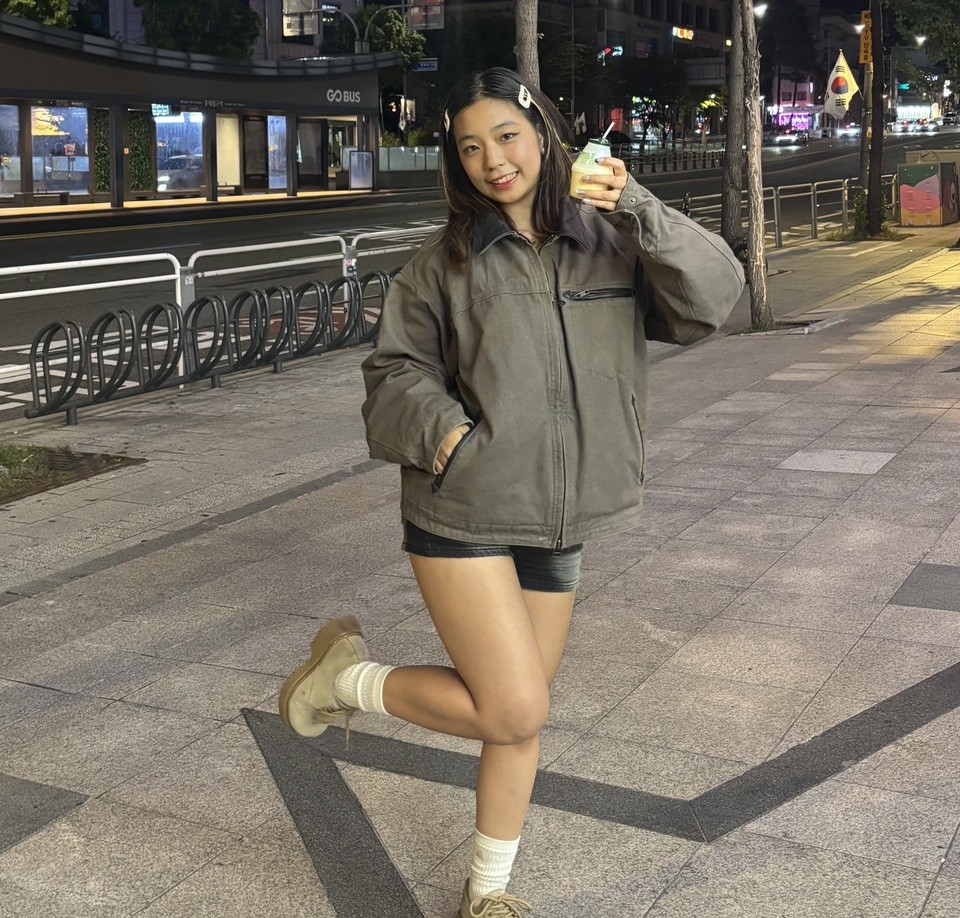

我是誰
具醫學資訊與創新應用背景的資訊實習生，參與 AI 應用、系統分析、需求整理與網站開發專案。我不只關注技術怎麼實作，更重視把使用者需求轉化為真正可用的系統功能。
王語涵｜AI 應用與系統開發實習生
醫學資訊 × AI 應用｜把需求，變成真正能用的系統
0
個 AI 專案實作
0
個 LLM 實測評估
0
次推論，0% 成功回傳

具醫學資訊與創新應用背景的資訊實習生，參與 AI 應用、系統分析、需求整理與網站開發專案。我不只關注技術怎麼實作，更重視把使用者需求轉化為真正可用的系統功能。
有數位轉型需求的企業與組織。我協助把散落在群組、錄音與表單裡的資訊整理成系統，改善工作流程、提升資訊處理效率。
跨領域學習力，能參與「需求理解 → 流程整理 → 架構規劃 → 實際開發」的完整流程。面對陌生技術，我會主動研究、拆解問題並找出解法。
每一項服務，都來自我實際做過的專案。
ASR 初稿 + LLM 校正，把會議、導覽、訪談錄音轉成可搜尋的文字紀錄。
用真實場域資料比較多個模型的正確率與幻覺風險，找出最適合的模型。
從群組訊息自動蒐集任務，串接 Google 試算表、Gmail、行事曆。
以 Microsoft Foundry、Fabric、Copilot Studio 快速建立 AI 應用原型。
從需求到上線，每個作品都寫清楚我負責的部分。
從 LINE 群組自動蒐集任務的機器人，以 AI 解析訊息與圖片，整理成可管理的任務清單。我用 React 打造產品展示網站，部署於 Vercel。
主要功能：跨群組任務蒐集、AI 任務解析、圖片識別、任務管理、管理員權限；可客製串接行事曆、Google 試算表、Email。
我的角色：前端開發與部署、功能文件整理
以 Breeze-ASR-25 產生逐字稿初稿，再呼叫算力平台推論 API，由 LLM 修正錯字、標點、斷句與專有名詞。以獅山古道實地導覽錄音（9 段、約 16 分鐘，含戶外環境音、多人插話、客語與英文）實測 10 個模型。
我的角色：原型設計、模型評估、成果報告撰寫
0次推論
10 個模型全數成功回傳
含逾時、自動重試、截斷偵測機制
0處
人工標註校正點
作為評估基準
0%
最高修正命中率
Google Gemma-3-27B
0次
最低幻覺次數
Llama-3.1-405B、Llama-3.3-70B
KEY INSIGHT
模型規模與修正命中率呈中度正相關（Spearman ρ ≈ 0.52），但與幻覺幾乎無關（ρ ≈ 0.10）。幻覺風險主要取決於模型系列的行為傾向，而非參數大小。
修正命中數（以 40 處人工標註為分母，依命中數排序）
| 模型 | 規模 | 修正命中 | 命中率 | 幻覺 |
|---|---|---|---|---|
| Gemma-3-27B | 27B | 21 | 52.5% | 6 |
| Llama-3.1-405B | 405B | 15 | 37.5% | 2 |
| Mistral-Large-3 | 675B | 15 | 37.5% | 4 |
| gpt-oss-120b | 120B | 15 | 37.5% | 9 |
| Llama-3.3-70B | 70B | 10 | 25.0% | 2 |
| gemma-3-12b-it | 12B | 9 | 22.5% | 3 |
| Gemma-3-TAIDE-12b | 12B | 8 | 20.0% | 3 |
| gpt-oss-20b | 20B | 7 | 17.5% | 3 |
| Mistral-Small-3.2 | 24B | 6 | 15.0% | 4 |
| Nemotron-Super-49B | 49B | 4 | 10.0% | 10 |
01
音檔輸入
實地導覽錄音
02
Breeze-ASR-25
逐字稿初稿
03
Prompt 組合器
70+ 關鍵字・9 條規則・維基百科地點資料
04
10 個 LLM
算力平台推論 API
05
Google Drive
結果存檔
06
人工複核
對照 40 處標註
本系統旨在協助醫師快速生成健檢報告的 AI 智能摘要、自動風險分級，並提供來賓（病患）友善的報告查詢介面，包含多語系翻譯與 Azure 語音播報功能，降低醫療數據的閱讀門檻。
我的角色：系統架構規劃、後端、文字處理